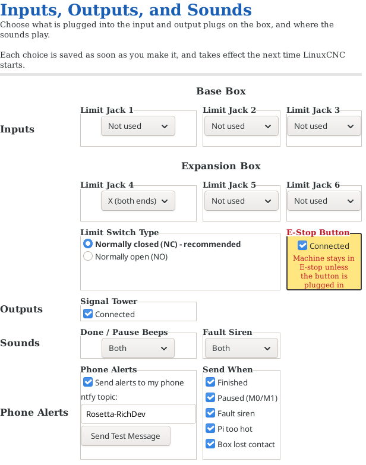
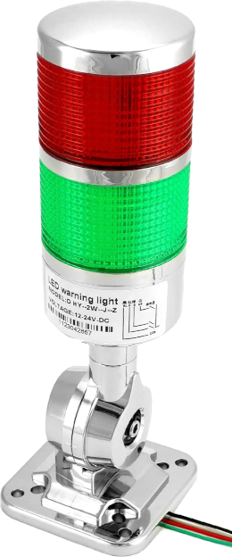

Key Note: The configuration program cannot be run when the Rosetta program is running. It is designed so that you configure the way Rosetta works, then run the system.

Inputs, Outputs, and Sounds
Limit Switches
When a limit switch is tripped, LinuxCNC turns the machine off.
Assign a Limit Switch to an Axis
To use a limit switch, you need to assign it to an axis. Rosetta is configured to accommodate 6 limit switches:
- Limit Jacks 1 - 3 are on the Base Box, and
- Limit Jacks 4 - 6 are on the optional Expansion Box. These can only be used when the Expansion Box is ticked as Connected on the Axis Selection tab. Otherwise they are greyed out; they keep their setting, ready for when the Expansion Box is connected.
Each Limit Jack only lists the axes which are assigned to a channel.
By default, all limit jacks are not enabled.
Limit Switch Types
The limit switches default to normally closed (NC), but the user can change them to be normally open (NO). Normally closed is strongly recommended - see Limit Switch in the Ornamental Turning Book of Knowledge for why, and for more on wiring and placing limit switches.
| NC |
The axis to which a limit switch is assigned will be in a limit mode until
|
| NO |
The axis to which a limit switch is assigned will not be in a limit mode until
Note: The axis to which a limit switch is assigned will not be in a limit mode if there is a break in the wire. Thusly, you should test to ensure it works before expecting it to (and find out it does not). |
Switch Configuration
Limit switches can be configured these ways.
| Both ends
|
This will enable the user to connect two or more switches for the same axis, and either switch can trigger a limit.
With this configuration, when an axis’ limit switch is triggered, LinuxCNC can't tell which end was triggered. Thusly, you will need to power the machine back on (F2), then check Override Limits (in LinuxCNC's Machine menu) to jog movement on this axis to disengage the switch. |
| Min end
|
Min end (for a selected axis): This will trigger a limit when movement hits the minimum movement. By convention, this is in the negative side of movement. For example, on the Z axis, this would be on the left side. With this configuration, when an axis’ limit switch is triggered, LinuxCNC will allow you to power the machine back on (F2), then jog movement on this axis away from the limit switch position (e.g., in the positive direction). |
| Max end
|
Max end (for a selected axis): This will trigger a limit when movement hits the maximum movement. By convention, this is in the positive side of movement. For example, on the Z axis, this would be on the right side. With this configuration, when an axis’ limit switch is triggered, LinuxCNC will allow you to power the machine back on (F2), then jog movement on this axis away from the limit switch position (e.g., in the negative direction). |
| Pause button |
For any jack used for the Pause button instead of a limit switch. |
| Not used |
For any jack with nothing plugged into it. For NC connections, this is critical if no switch it is to be used. Otherwise, there will be an open circuit and a limit will be triggered for that axis. |
For any axis, the limit switches can be configured for that axis with:
- One both ends jack, or
- One min jack, or
- One max jack, or
- One min and one max jack, and
- One pause button
Notes:
- Spindles using the Sp0 or Sp1 connections cannot have limit switches assigned to them.
- Cabling for the limit switches.
Pause Button
Instead of a limit switch, one limit jack may be used as a Pause button (i.e., a push button you can reach quickly at the machine). To use a pause button, set the jack you wish to use to Pause button.
Only one jack can be the Pause button; choosing it on a second jack is flagged as Duplicate! and is not saved until it is corrected.
Pressing the Pause button pauses:
- a Sync Move - carry on with Continue on the main screen, or use Return to Start (see Pausing a Sync Move), or
- a G-code program - carry on with LinuxCNC's Resume button, or with Continue on the main screen's Sync Move tab.
The Pause button only pauses. Pressing it again does not resume the operation: that is always done using a button on the screen. It does not pause Cut Thread or indexing.
Using the pause button does not drive a fault: there is no red light or siren as there is with the use of an E-stop.
The Pause button uses the same Limit Switch Type as the limit switches:
- with NC (normally closed), use a normally closed push button.
- with NO (normally open), use a normally open push button.
Do not plug in a push button of the other type. It would read as pressed all the time.
The pause button is engaged:
- When the button reads as pressed
- When the circuit is configured as NC and:
- a NO button is plugged into the circuit, or
- there is a broken wire
- When the circuit is configured as NO and:
- a NC button is plugged into the circuit
When a pause button is engaged, Sync Move and LinuxCNC's Run will not start. The system will note that the Pause button is pressed or disconnected.
Notes:
- The Pause button is wired like a limit switch - see Limit Switch Cabling.
E-Stop Button
For the E-Stop button, this is either set as connected, or not. The E-Stop button plugs into the Base Box.
The E-Stop button is defined as a normally closed (NC) circuit, so once the circuit encounters a break (i.e., when the E-Stop button is engaged), the system will move to an Emergency Stop status.
Key Note: As this is a normally closed circuit, once the use of an E-Stop button is enabled, the system cannot be taken out of Emergency Stop until
- a button is attached to the system and
- it is in a disengaged state.
Note:
- Cabling for the E-Stop button
- Usage instructions for the E-Stop button
- The E-Stop button cannot be setup to be normally open.
Signal Tower

The signal tower plugs into the Base Box. It is setup in Rosetta to have 3 outputs:
RED LIGHT: A signal which lights a red light when:
It does not light for:
| |

| GREEN LIGHT: A signal which lights a green light to indicate that the system is running an operation:
It does not light for:
|

| BUZZER: A buzzer is set to sound for certain situations. Those are outlined below in sounds. |
Note:
- Cabling for the signal tower.
Sounds
Most sounds are available to heard on either of two output devices, or both:
- Signal tower’s siren,
- Monitor’s speaker (via HDMI), or
- Both
There is one sound which cannot be played on the signal tower’s siren: that is the one alerting the user that a reserved name has been used for a gcode program in the gcode directory. That is because this error is identified and sounded before LinuxCNC is started.
More information about sounds.
Phone Alerts
Rosetta can send a message to your phone when something happens at the machine, so you can leave it while it works. The messages come through ntfy, a free app for the iPhone (App Store) and Android phones (Google Play).
Setting Up Phone Alerts
- Install the ntfy app on your phone.
- In Rosetta Settings, on the Inputs, Outputs, and Sounds tab, check Send alerts to my phone. The ntfy topic box is filled in with Rosetta- and your machine's serial number, for example Rosetta-Rosetta003.
- In the ntfy app, tap +, type in the topic exactly as Rosetta Settings shows it (capital letters matter), and tap Subscribe.
- In Rosetta Settings, press Send Test Message. It shows Sent - check your phone, and the test message arrives on your phone within a few seconds.
- Under Send When, tick the events you want to be told about.
- Start Rosetta. Phone alerts take effect the next time Rosetta starts.
What Is Sent
Each message's title is Rosetta, S/N and your machine's serial number, so you can tell which machine sent it.
| Finished |
A G-code program, a Sync Move or a Cut Thread finished. For example: Program finished (Geo1216.ngc). Nothing is sent when you stop one part way. |
| Paused (M0/M1) |
A G-code program stopped at an M0 or M1 to wait for you. For example: Program paused at line 42 (Geo1216.ngc) - waiting for you. |
| Fault siren |
A following error or a tripped limit switch stopped the machine - the same time the fault siren sounds and the signal tower's red light comes on. Sent as urgent. |
| Pi too hot |
The Raspberry Pi reached its Alarm temperature (see Pi Temperature). |
| Box lost contact |
The Base Box or the Expansion Box lost contact with the Raspberry Pi, and the machine is in E-stop (see Lost contact). Sent as urgent. |
Do not rely on phone alerts to keep the machine safe. They are a convenience. If the Raspberry Pi can't reach the internet, or your phone has no signal, the message is lost and is not sent again. Never leave a running machine where you couldn't get back to it quickly.
Do not give your topic to anyone you don't want reading your alerts. Anyone who knows the topic can subscribe to it in the ntfy app and see your messages. To make it harder to guess, add a word of your own to the end of the topic in Rosetta Settings, for example Rosetta-Rosetta003-bluebird, then subscribe to that same topic in the ntfy app.
Notes:
- Phone alerts are sent whatever the Sounds are set to. For example, with the Fault Siren set to Off, the Fault siren alert is still sent.
- If you have more than one Rosetta, subscribe to each machine's topic in the ntfy app.
- The Raspberry Pi needs the internet for phone alerts - see Setting up Wi-Fi.
- If an alert doesn't arrive, see Phone alerts don't arrive.
Running the Rosetta Settings Program
To access the Rosetta Settings program, there are 2 options:
|
|
Option 1: Use the icon on the desktop

Double-click on the Rosetta Settings icon on the desktop (the big gear)
|
|
Option 2: Use the Applications menu
- Click on Applications at the top left corner of the screen
- Click on the arrow to the right of Rosetta
- Click on Rosetta Settings (the one with a gear)
| Applications | |
 Rosetta > Rosetta >
| Rosetta
|
| Rosetta Settings
| |
 Backup Rosetta Backup Rosetta
| |
 Update Rosetta Update Rosetta
| |
 Geometric Chuck Designer Geometric Chuck Designer
| |
 Rosette Designer Rosette Designer
| |